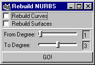

rebuildNURBS
Provides a UI for detecting and rebuilding Curves and Surfaces from one degree to another.
Rebuild Curves
Click this ON to rebuild all curves whose degree matches that specified in 'From Degree'.
Rebuild Surfaces
Click this ON to rebuild all surfaces whose degree matches that specified in 'From Degree'.
From Degree
All Curves and/or Surfaces of this degree will be rebuilt...
To Degree
... to this degree.
GO!
Click this button to start the rebuild process. Simple, no?